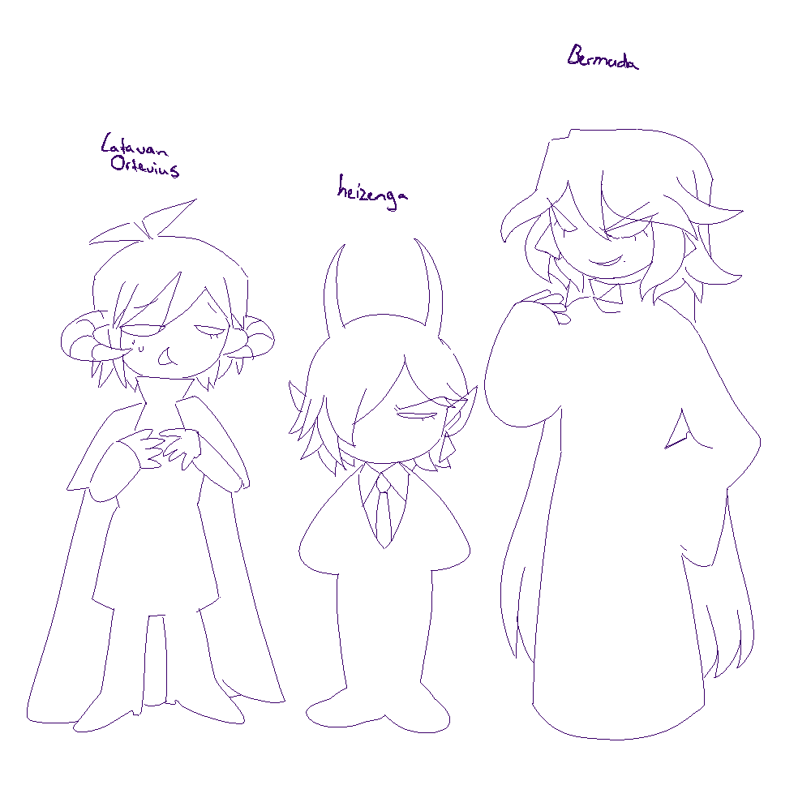
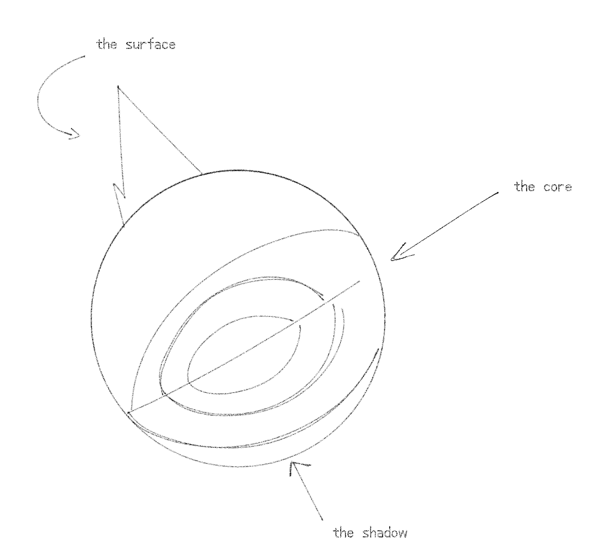
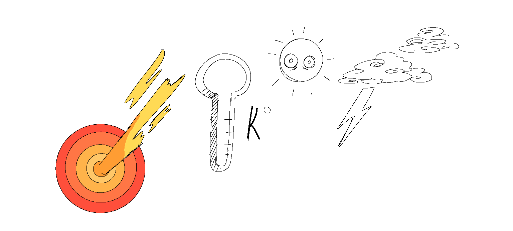

The Elderitch realm
also reffered to as : The els, Rulers alike to death, eltsAbout the EL realm
The Eldritch Realm is a dark, twisted portal world filled with bizarre and often terrifying creatures. Creatures related to conspiracies or UFOs. Things that we often think are not based on science or are created through word of mouth come alive here. Influenced by Lovecraftian horror, this realm is characterized by its nightmarish look alike landscapes and the morbid strange beings that reside in it.
The El Species
Eldritch creatures range from vaguely humanoid to monstrous, often with features
that defy natural human laws, like tentacles or multiple eyes. They can induce
fear
and madness, or appear normal but have ominous personalities. Most are regular
monstrous citizens with important jobs.
Eldritch creatures range from vaguely humanoid to monstrous, often with features
that defy natural human laws, like tentacles or multiple eyes. They can induce
fear
and madness, or appear normal but have ominous personalities. Most are regular
monstrous citizens with important jobs.
Species
the types of species that live in the eldritch realm (you can click on the induvial
topics to delve more in them some are still under construction:Labled Brown )
Monsters:
skeletons,
vampires,
zombies,
Frankenstein's
Ghosts
cryptids
Aliens:
Rainbowship,
Conducters
Illusions:
Wizards,
Effects,
The bermuda triangle
Job title/ High El servant
a thing to note that there are title jobs that species in the El world can retain and
those are not indivual species themselves(individual job titles will be getting
their own sections aswell)
Those are:
Workers:
- Servants under the high el
Reapers
- The gathererers of undead souls from various realms
High
Leader El
- The rulers and leaders of the elderitch realm (there are always 3)

Current El leaders: Ortevius latavan, Heizenga, Bermuda Verhir
Geography
The geography of the Eldritch Realm can be quite unsettling. the weathers are often
extreme (winters being in Kelvin levels and random core lava outbursts) The
landscape is dominated by dark forests, Huge mountains and Its always night time;
the sun does not shine there and the moon is what gives them light. Gravity and
other natural physical laws can be inconsistent, which can cause random unexpected
chaos.

The el world is divided currently in 3 domains whith each el leader holding its place - the surface, which is the upper part of the planet, and serves as the main bastion guard against various attacks or wars from other realms - the shadow, which forms as a second defence and is like a closer protection to the core - The main core, the vital point of the realm, sustaining the worlds energy keeping the realm alive, its heavily guarded and under protection

Culture
Most Eldritch citizens wear black attire to camouflage with their surroundings.
Workers and reapers are mandated to wear suits as it is considered formal. All
Eldritch citizens have a triangle symbol branded on them, which signifies that they
have Eldritch blood. The triangle represents the Illuminati, the main conspiracy,
and the Bermuda Triangle.
The culture in the Eldritch Realm can differ by clans or states, but there are
universal holidays that take place, such as the Eclipse Olympics. During this event,
everyone wears festival attire, and all workers must battle against other high el
workers. The previous high Eldritch leader is then called from the depths to
represent the main theme of that year. The Eclipse Olympics occur every 100,000
years and hold a deep significance, allowing citizens to pay "thanks" to their
previous Eldritch leaders.
Eldritch beings are not very fond of outside realms, especially the Eths and Myths,
as they feel these outsiders want to perform strange exorcisms on them. They hate
the Eths but have a strange adoration for Myths. Myths are like jewels and
accessories to them, their are very rare. When they are caught, they are
dismembered, their organs are sold on the black market, they are held in cages, or
they are often traded for large amounts of money.
Tech
Technology in the Eldritch Realm is a blend of ancient and modern devices. They have
big functional healing system (like the black sauna for when their citizens or
workers get injure) and other devices for maintaining large-scale agriculture. Their
buildings also exhibit a mix of modern and ancient styles. Devices are often powered
by dark matter or Eldritch blood. The core is the bastion of energy that keeps the
world stable. Though they do not have proper cars or bikes, they often ride
scrap-made tractors.
Gumi loves to make them.

© 2023-2024 DEATHENIZE. All rights reserved.